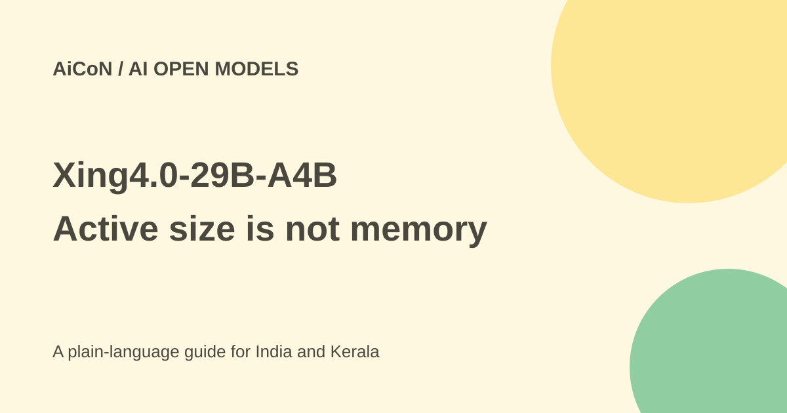

Xing4.0-29B-A4B: open weights, hardware and agent limits
Xing4.0-29B-A4B is an open-weight language model from China Telecom AI. It is aimed at agent tasks, but 4B active parameters does not mean it needs only a 4B model worth of memory.

What is Xing4.0-29B-A4B?
The official model card lists 29 billion total parameters and 4 billion activated per token. Parameters are the stored numbers that shape a model's answers. A mixture-of-experts model selects parts of that larger model for each step, reducing active computation without removing the rest of the weights.
The vendor lists a 256K native context, extensible to 512K. Context is the amount of material the model can work with at once. A listed maximum is not proof that every deployment can use it at good speed or cost. Longer context adds memory and processing demands.
Is it free?
The weights are publicly available, and the live Hugging Face card labels the model Apache 2.0. Review the actual files, licence and vendor disclaimer for your intended use. Free downloads are not free hosting: hardware, storage, electricity, deployment and maintenance still cost money.
The card describes an OpenAI-compatible API format. That means compatible request structure, not a free OpenAI account or an included public chatbot service. A hosted provider can charge for its API separately.
What hardware does it need?
Do not size hardware using only 4B active parameters. All 29B weights still need storage or an appropriate offload strategy. The vendor's GGUF page says its IQ4_NL mixed-precision file is approximately 18 GB and can run on a consumer GPU. A file's size is not total runtime memory, especially with long context.
The original news promoted a light model. This guide does not promise a universal 15 GB requirement or a particular laptop result. Quantisation, framework, context, cache and CPU offloading all change the practical needs. Check the exact variant before a large download.
How to evaluate it safely
- Open the official model card and choose the base, FP8 or GGUF variant appropriate to your framework.
- Check disk and memory requirements, package versions and the current licence files.
- Use a clean test environment. Pin versions and review downloaded code before running it.
- Start with short prompts and measure memory, latency and answer quality.
- Test your real languages and tasks, including Malayalam or mixed-language requests if needed.
- Only then connect tools, first with read-only permissions and a test repository.
Framework and code cautions
The vendor documents Transformers, vLLM, SGLang and KTransformers routes. KTransformers can split work across CPU and GPU. The repository's example uses trust_remote_code=True, which permits loading repository code. Review that code and dependencies rather than copying the flag into a sensitive machine without checking.
The company says training used Huawei Ascend and MindSpore. That is a training-stack claim, not a requirement that every reader buy an Ascend device for inference. Vendor benchmarks and agent-framework adaptation claims are not independent proof of reliability in your workflow.
What changed since the original AiCoN post?
This guide adds the current licence label, weight-variant choices and the distinction between active computation and full memory needs. It keeps long-context and performance figures attributed to the vendor rather than guaranteeing a cheap local deployment.
Frequently asked questions
Is it a 4B model?
No. It has 29B total parameters with 4B active per token.
Can it run every agent safely?
No. Test tool calls and keep permissions narrow.
Is downloading enough to use it?
No. You need a compatible runtime and sufficient resources.
Sources: Official model card · Official deployment README · Vendor GGUF variant. Checked 7 October 2026.